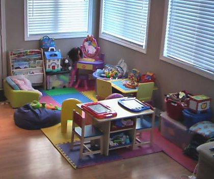

If your web host have any relevant business templates that you can use for your presentation, with relevant graphics, that would've been great. If not, you may want to look for free ones on the Internet by searching; or search for daycare businesses and activity programs, and steal some ideas from their websites, without braking any copyright laws.
The best way to present your service is to start by sharing your ideals and goals on the front page:
You may write that you don't have children of your own, but that you adore children, and want to take part of their lives and help them becoming educated and self-confident beings.
And, you want to give them a strong and stable male role model to look up to and relay on for security and guidance; which actually is important for many new age parents, thus attracting some easily exploitable hippies.
Optionally, add that you can't have your own children because of infertility, which can give you both sympathy and a plausible reason for actually starting such a service in the first place. This can be especially important for single males.
However, by presenting yourself as infertile, you may also appear as 'sick', thus repulse some pompous parents.
Babysitters may also add that money isn't the main reason for starting such a service. Your main reason is to experience the privilege of having fun with children while watching them learn and develop. Thus, your fees are generally low.
The next part should highlight your experience with children:
Inform the readers that you've worked as a volunteer within elementary schools and/or preschools, while ideally having some certificates and/or education to brag about.
Any testimonials would be great to add as well, as long as the ones whom you're referring to has agreed to be listed in public.
All this will be very comforting among most parents; especially among those who are currently looking for decent babysitters, as most babysitters out there are actually clumsy and less responsible teenagers with little to no experience with children.
Then comes security:
Make sure that the readers learn that you know how to keep children safe and know how to perform CPR, ideally having a basic but recent rescue and CPR course geared towards children. Emphasize that your home is childproof from sharp object and poisonous chemicals, and generally made safe for children to move freely around, both indoors and outdoors.
Static babysitters should add some pictures of their homes:
Start with the outside, then move to the inside, and finally show lots of pictures of your playroom as the grand finale.
A nice picture of yourself, along with some additional personal information about you, is crucial, as this will give the readers an honest and a decent impression of you.
Finally add some general info about your service, based on your plan that you've already made, informing parents about what ages you can babysit and at what times you're available, including the fees. Or, inform them all about your scouting or activity program, if this is your chosen service.
And of course, also add contact information.
A professional photographer is something to seriously consider for all your photos on your website presentation. You may also want to consider a professional web designer as well, if you got the cash for all this.
The Pedophile's Handbook
Handbook > Finding Children > Babysitting and Scouting
My fourth recommendation for finding children is to become a babysitter or children scout leader, as in either offering to babysit children, starting your very own babysitting service, or establishing a children scouting program, in your community.
You may even combine all three into one complete child care service, if you have the experience and motivation to do so; and even start additional children activity programs.
This way of finding children is ranked at fourth place because it can become a real challenge accomplishing any of this, especially as a male. But when you finally do accomplish it, you will gain some extraordinary access to many different children, without having to deal with single moms, schools or all the security concerns of kiddie magnets.
If you are a female pedophile however, this method of finding children will probably become especially easy while being the very best method of them all.
I will now go through all the advantages and disadvantages, which will give you a good idea about what this is all about:
Advantages
Alone With the Kids
The most important advantage with babysitting is that you will usually be all alone with either one child or just a few children during each session.
This also regards daycare and scouting programs, but you will then be more likely alone with a larger group of kids instead.
Alone-time with children gives you the opportunity to instantly begin bonding and fondling with them, without having to worry all that much about inappropriate interactions. This will give you a much quicker access to illegal child love practice.
Time and Control
Most babysitters have a decent amount of time with the kids. But not only that; they usually know pretty much exactly when the parents will return as well.
And the same goes for scouting programs, as these sessions usually begin and end at specific times at regular days of the week. However, a scout leader will have even more time with, and more control over, both the kids and his environment.
This gives you a lot of comfort, confidence and security when both bonding with the children and eventually practicing illegal child love with them; while also being able to better plan every session down to the smallest detail, to make them as predicable and enjoyable as possible.
Sleepovers
The most trusted babysitters will be able to babysit children overnight, whether being at the children's own homes or having them stay over at the pedophile's.
The most trusted scout leaders will have the same awesome opportunity, as overnight trips in the woods aren't all that uncommon for children scouting programs.
There are so many things you can do to sleeping children, especially the younger ones, which makes this opportunity very nice and important for all pedophiles.
Not to mention, tickling little kiddies in their pajamas during bedtime, which can trigger sexual curiosity and arousal withing them. Or, cuddling in the bed together, under the duvet, while reading bedtime stories.
And. just imagine crawling into various tents in the woods to interact and have sex with little girl and boy scouts, who are curious, horny and sexually excited by being out in the wild.
Or, how about crawling into the sleeping bags of concerned little scouts, to comfort them with your hands and gentle kisses, whom you can fondle and fiddle with while no one else can see what's going on deep down and far into those thick sleeping bags in the dark? A little orgasm may be enough to calm them down and fall into sleep, in your arms.
Flexibility
This is the most flexible way to find children; as you can more or less decide when to be available as a babysitter, or when to have the scouting sessions, and how long they should be.
This makes it very convenient to start projects like these, while still having a full time job and other responsibilities.
Disadvantages
Hard to Accomplish
One thing that sends this way of finding children down to the second last place, is that becoming a babysitter or scouting leader is initially quite difficult to accomplish as a male, especially as a single and childless male with less relevant experience and credentials.
The average modern parent, and adult in general, is very much aware about pedophiles; and a pedophile couldn't be more obvious if he suggests or advertises such services.
It will however be a little less difficult accomplishing children scouting programs; but these will on another hand not give you the exact same level of access and privacy with the children, compared to babysitting services.
And, scouting programs do usually contain several adults.
Suspicious
By involving yourself in this arena, as in attempting to become a babysitter or scouting leader, you may become a suspect of being a pedophile who wants easy and convenient access to children; especially if you're a male.
Such suspicions can be difficult having over you in small communities and neighborhoods, especially if you have close family living in the same area.
However, this depends a lot on your own local community and your relationship with it, and your own life situation.
... continued
This is probably the way to find children that most of you males think will be quite impossible to accomplish.
But, I personally know about several instances of which this has been successfully accomplished by males:
Well, it is first of all not illegal by law to suggest babysitting or advertising a babysitter service in your community. Neither is it illegal by law suggesting or advertising children scouting programs. You can do this as much as you want to, and no one can arrest you for doing so. And it is as simple as that.
By having any experience or credentials on papers from any official work with children, and/or by having any child care or education diplomas and certificates, this can actually become more easy to accomplish than most of you think.
The way you present your service will also be very important, and something that has to be done in a special way, which of course you will learn further down in this chapter.
And the most important fact here is that not all parents out there are careful and skeptical parents. There are actually lots of reckless parents out there who don't care all that much about who babysits or performs activities with their children.
In my line of work, I've seen so many samples of careless parenting in this regard. And after many years of communicating with Internet pedophiles, there are lots of pedophiles who have successfully become babysitters and children scouting leaders, and some even without any credentials at all, simply because of this important fact.
Not to mention, all the idealistic and naive hippie parents out there who think that all males are such great carers. *cough*
You may of course start other activity programs if you want to, like basketball, baseball, football or soccer. These will be less intimate and more stressing activity programs, but then again even easier and less suspicious to establish than scouting.
An activity program for troubled children and teens is also a quite interesting thought; as most of their parents would love to get a break from them now and then, while most of these children are generally very easy to bond with and seduce. Of course, as long as you are able to stand some serious brats whom never listen to adults and never do what they say.
All this is way more accomplishable than most of you may think, thus you may just end up being totally surprised about how easy this actually can become.
This is of course a rather bold method to use as a male; but sometimes so bold that you may actually end up seeming like a highly self-confident and honest person, instead of a potential pedophile, which can give you a paradoxical trust among several parents, as a safe and decent carer.
Just have a positive mindset. Because, you can do this!
Recommended Instructions
Let's take a look at the most correct and least suspicious way to become a babysitter or children scouting leader, or even both if you want to:
Establishing Credibility
While not being strictly required, one thing that will make this method of finding children way more likely to happen for you as a pedophile male, is to first establish some sort of credibility and assurance (to build your new service upon).
You will need parents to believe that you can offer a safe and high quality service for them and their children. And your own words are usually not enough to accomplish this, especially not when dealing with totally unknown parents.
My best recommendation to accomplish this, is first of all to involve yourself in volunteer work within child institutions, as described in the former schools chapter. And the further, deeper and longer you involve yourself within this, and the more experience and education you manage to acquire along this way, the more credibility and assurance you will gain when attempting to become a babysitter or scout leader.
If you do this correctly, you will have support from your family and local community, experience from educational and caring work within elementary schools or preschools, having the correct certificates that's required for working with children, and optionally some sort of relevant education.
If you want to start a children scouting program, it becomes very important to additionally learn the basics about camping, camping equipment and outdoors survival.
The most important thing to know is basic first aid and CPR, which usually is a course that only takes one evening and doesn't cost all that much, and should ideally be a course geared towards babies and children.
Creating a Plan
The very first question you will have to ask yourself, is what sort of service you would like to open:
- Babysitting
- Scouting
This will depend a lot on your preference, experience and education. However, all the information in this chapter should help you make that decision if you're unsure about it now.
You also have the option to establish a complete childcare service with babysitting, activity programs and scouting.
Part-Time or Full-Time?
The next question in line is: do you plan on making this a new career and full time job, or just something fun and exciting to do in weekends and after your regular work hours?
Having a full-time job as a self-employed, which involves legal or illegal child love practice all day and all week long, is simply the best job there is for a pedophile; which is why you should at least consider this as a possibility.
However, a daycare service is the most likely service to be able to live off, unless you aim for a complete childcare service that also includes scouting and/or other programs.
A nice tip in this regard would be to start out by offering your service in weekends and after work. If it becomes a success, and you start earning some decent money from your service, you could always consider making it a full-time job.
Or, you may actually be unemployed as we speak, which would make it way more easier and sensible to turn this into a full-time job as soon as possible.
Amateur or Professional?
How advanced should your service become?
Will your babysitting or scouting service be all about just play and fun while watching the brats, or should it have a deeper meaning with relevant education and character building?
The more advanced your service is, the more trustworthy it will appear in the eyes of potential parents and customers. Though, more advanced services will obviously require more experience and education on paper, from your part.
Gender and Age Support
What gender and ages will your new service support?
All babysitting services should support both genders, as it would seem utterly strange and suspicious if your babysitting service only supports either little girls or little boys.
However, scouting is a little bit different in this regard:
You probably already know the terms boy and girl scouts, which imply that children scouts are either boys or girls.
These are old-fashioned and old-school scouting programs, containing either girls or boys only. There are many such scouting programs still around today, being geared towards gender role based activities and character building.
Modern child scouting however, is multi-gender. And these programs are becoming more and more popular among both children and their parents. They also appear more trustworthy and safe in the eyes of most parents, as the parents will more likely associate these programs with regular schools and after-school programs, rather than a boy or girl lover's heaven.
My recommendation is thus to aim for multi-gender scouting, as well as multi-gender babysitting and daycare services.
When it comes to the ages of children, you are more free to set limits in regards to both babysitting and scouting.
However, I still recommend being as versatile as possible regarding babysitting age support, as this will give you more jobs and credentials, while appearing most trustworthy.
Of course, if you're unsure about watching babies and toddlers, as these children do generally require more from babysitters, you may set a lower age limit that fits your own comfort zone. Though, it isn't all that hard watching babies and toddlers as soon as you gain some experience; they only need nutrition, diaper changes and lots of love and care.
Larger private daycare services will anyway contain mostly preschoolers and younger, during daytime and school hours.
Scouting services will actually need age limits of pure practical reasons: the younger children will simply not be able to match the older children in regards to activities and hikes.
The most common age groups within scouting are 5-7, 8-10 and 11-15 year olds. You may therefore pick just one age group that you would prefer working with (and make love to).
But if you want to, you are free to create more than just one scouting service, to support more age groups and more children. E.g., you may have the 5-7 year old Beavers one day, and the 8-10 year old Cubs another day. Optionally, the 11-15 year old Rangers another day as well.
Fees
You will most likely earn money from babysitting services, especially if you aim for a professional daycare service.
And that is pretty incredible for a pedophile if you think about it, as in getting paid for having sex with sweet children!
Non-relative babysitters take a fee (per hour) for babysitting. This is expected, so you should do it too; it would look really suspicious to offer free babysitting to non-relatives.
Determining the fee can be difficult. The average fee is about $10 per hour, or equivalent. But it can be as low as only $5 per hour or as high as $20; depending on the economical state of your country and local area, and your own experience, education, credentials and professionalism.
A regular daycare service can cost anything between $100 and $500 a week, or equivalent, depending on the same factors as written in the latter paragraph; in addition to the length of each day, as some daycares also offer late evening services, even overnights.
Low fees can be great to have, because that will attract poor people with problems, who just want a cheap way of getting rid of their kids for shorter or longer periods. And if anyone of the poor parents shouldn't pay, don't nag them about it, because you will get paid anyway by their children, with sex.
Though, low fees may also make you appear suspicious, making it wise not to set them too low.
Children scouting programs are usually free of charge, and they should be that if you really want to attract kids. But you may of course ask their parents for economical support to buy e.g. uniforms and various equipment.
Amount of Children
You should ideally not handle more than 2 infants, 6 toddlers or 10-12 first-graders and older at once. If you pass these recommendations, the kids may tear you into small pieces, and eat you up raw like tiny little lions with bloody mouths.
And I mean either here; so if you're already watching e.g. 6 toddlers, you shouldn't watch anymore kids simultaneously.
If you ever get like 10 first-graders to control at once, like as a scout leader, you will quickly see what I mean(!).
... continued
It's important to think thoroughly through questions like these, and ask for help in pedophile support forums if you're unsure about what sort of service to start and how to practice it.
This is something that you just don't want to jump into without being thoroughly prepared, because it requires a lot of responsibility to watch and care for children at all ages.
Preparing a Service
As soon as you have an idea about what service to start, and how it should be ran, it is time to actually create the service.
It's important that a service is all ready before advertising it!
This can potentially cost a lot of money, in the same time as being uncertain if it will succeed at all. But this is the only way to even have a slim chance of succeeding, so it is required.
Dynamic Babysitter
A dynamic babysitter is a babysitter who travels around to babysit children at peoples homes.
This will require that you're mobile, as in ideally owning a car. But you don't have to own a car to become a dynamic babysitter; it's just that it can become a challenge relying on public transportation, and expensive relying on cabs.
Have a backpack that contains a decent first aid kit, along with some special toys and books. A first aid kit is great to have, since many parents don't have one, or you don't know where to find one if an accident happens. Those special toys and books will be great to use to easier get to know and bond with shy children whom don't know you yet.
Also have your credentials along with you in your backpack, so you can show them to new parents to ensure them that you got experience, and ideally a relevant certificate and some education; all of which will make you look like a trustworthy and serious babysitter. But you only need to show them this if they ask for it, whether it is before or after you arrive at their home.
Get yourself some nice clothes. Don't show up in leather clothes or a running suit, use clean jeans with a nice sweater.
Static Babysitter
A static babysitter is a babysitter who uses his home to babysit children; so the parents can deliver their children to your home, and then pick them up afterwards.
This is also referred to as 'daycare' among many parents.
This sort of service means that you must make your home child proof, and ideally have a playroom for the kids with exciting and nice toys in it. Such a playroom will make new and shy children, who don't know you yet, much easier settle down at your home when their parents leave. And it will make them happy to return later for more exciting play.

You should also have some art and handcraft equipment too, inside this room, so the children can paint and draw. Some books and puzzle games would be nice too.
Creating such a room is the expensive part of this service. But it's also the important part, as it will really give potential clients a very positive impression of your service.
Make sure that your home doesn't have any hardware tools lying around that children can grab a hold of, and that all chemicals are removed from bottom cabinets and drawers.
Most importantly, have an advanced first aid cabinet in your hallway, so that cabinet is the first thing the parent see when they enter your home/daycare.
Other than that, just make sure that your home is all clean, especially the kitchen and bathroom, and generally smells nice and clean at once you enter it.
Regarding kitchen and bathroom: if your daycare supports babies and toddlers, you will of course have to invest in baby chairs with buckles for your kitchen, and a diaper change station and a cute little potty for the bathroom.
Scouting Programs
Activity programs don't require all that much of physical preparations, but a few things would be nice to have ready:
Scout leaders should have some camping equipment ready, like tools and fuel to create bonfires, a portable stove, canned food, and suitable clothings. A GPS would also be nice to have, along with maps and a compass. And why not a large tent, even though being rather optimistic.
If you want your scouting service to seem serious, you may want to buy unique uniforms for yourself and the children. The children will feel special and important while wearing them, with an increased moral and respect for your service.
Sports coaches need sports equipment, like some bats, balls, glows, and other relevant equipment for your chosen sport. While of course, making sure that you have a field to have fun and practice at, whether it's public or has to be rented.
And as always: an advanced first aid kit to take along!
Advertising your Service
Now comes the challenging part, usually in terms of oddity and embarrassment, but the highly needed step to kick off your new babysitting or scouting service.
Well, it is kind of unusual and suspicious for males to start such services, especially single males without kids who start babysitting services, which will make this highly unique.
However, being unique doesn't have to be a negative thing; because this uniqueness can actually be used to your advantage during the advertising, as it will make you stick out from the rest of the bunch, thus give you lots of attention.
Any PR is good PR, as they say within large corporates!
Presentation
Creating a website for your new service is a must, and should be your very first task. Internet is a very powerful tool for both presenting and adverting services, both of which are cheap and simple to accomplish, even if you're inexperienced within website development and design. Most web hosts are easy to use with lots of easy and available creative-tools.
Recommended Presentation
Now you will have a website address to a nice presentation of your service, which you can share with various people or add to stickers and fliers. You will also have a website that people can find through searching, as lots of parents do search for babysitters and activity programs in their local areas.
You may also print your website onto glossy photo papers, and easily create brochures from your website presentation. These can be nice to share around, and will make both you and your service seem quite professional and safe.
Advertisement
I recommend starting out by first informing family and friends, optionally your work colleges as well, about your new service. Then you can kind of feel your way through this new thing in an incremental way, and see how people respond to this.
Social websites, like Facebook, Google+, Twitter, and etc, would be great places to announce your service; in addition to talking to people and sending some emails around.
It would've been great if someone whom you know would let you babysit their children first, or have their children entering your scouting program, even though if it's just a few children. This would be a nice foundation to expand your service upon, while giving you additional credibility and referrals for later.
The next or alternate step is to go fully public with your new service, as in public advertisement:
The cheap way to go about this would be to aim for local websites and message boards; and put up fliers around in your local community where parents hang out, like at malls, playgrounds and public transportation stops.
You may also advertise by putting fliers in your neighbors mailboxes. But please note that this may be illegal in some countries and regions, requiring you to put the fliers on their doormats instead.
Babysitters can just add a line that asks if anyone needs a professional babysitter/daycare for their children.
Scout leaders can just add a line that asks if parents want their children to become real scouts, and become parts of a free education and character building program with lots of fun and social interactions.
Don't mention your gender or add anything else at this point, just add your website address so as many parents as possible visit your website and see that specially crafted presentation. You may also add your phone number, in case some people don't have Internet access, or just don't care about who you are or where they place their kids.
The reason for not mentioning your gender in your ads, is because that may immediately freak some parents out, which may cause them to throw away your advertisements before even visiting your website. By sort of luring them to your special website and presentation first, they may actually accept that you're a male after all, after having read through it.
The expensive way would be to contact a professional advertising company, that will help you and make everything happen without you having to do much.
Opening your Service
As soon as you've began advertising your service, people will sooner or later contact you. Sooner may be the next day, and later may be the next month or year. Thus, it's important to be extremely patient during this usually difficult startup time for male pedophile babysitters and scout leaders.
The nice thing about these services is that they can just stay open, while you keep on living your life as usual. You don't have to sit and wait for something to happen; just let that service run in the background, while doing some advertising now and then, and wait for that someone to first contact you.
What usually happens now, is that you will eventually be contacted by a few parents who will first check you out some.
Some of these may just be curious about your service, others may consider using it, but there will always be those few who will ask uncomfortable and even some disturbing questions. It's thus important that you're prepared for anything they can throw at you when they start contacting you.
Some will call you, while others will show up unannounced.
Braising Yourself
We will now look at some possible challenges that you can meet when people contact you, and how to handle them.
These are actually based on real-life occurrences!
We have already tried to minimize these challenges by establishing a presentation website that informs parents and people about your service. This will help a lot, while we can refer parents to that website if they haven't already seen it.
If someone can't access the Internet, we can print that website into brochures that we can give them, or send to them for free, which they can look through instead.
Here are a few questions that people actually have asked pedophiles who have started such services, along with the recommended replies.
There are many questions that can be asked, but they all boil down to just a few types that will be similar to these groups.
It's important that you are prepared for and remember how to respond to these types of questions:
The Hysterical Mom
"I have to be honest with you and say that it struck me as odd seeing your babysitter/scouting ad (on my porch) this morning. I've never experienced an adult male sharing such around before, and that made me concerned for my kids. May I ask why you go around doing this?"
If you've put fliers in peoples mailboxes or left them on their doors or porches, some of the more hysterical ones may react negatively too that. They may feel that you have trespassed their comfort zones, and will thus react to that.
But this can also happen when a hysterical parent sees your ad anywhere for that matter.
Don't worry though, you've not done anything illegal. All that they can do, is to become hysterical. And all that you have to do, is to handle them correctly.
It's important that you stay calm now, even if this makes your heart tick faster and face blush up. Just keep yourself calm, show them lots of empathy, and then tell them how much you enjoy taking care of and spending time with children:
"I'm sorry if I made you concerned. However, there's nothing to be concerned about. The reason for sharing babysitter/scouting ads around in my local community is because I'm offering this as a professional service. I have a strong passion for child care work, (which I actually have experience from,) and I love spending time with children, while it would also be nice helping my local community out. I hope you took some time to visit and look at my homepage. If you can't access the Internet, I would be happy to give you a detailed brochure about my service."
Some won't give up that easily, espeically not when it comes to middle-age male babysitters:
"I still have to wonder why an adult male does this. I thought it was mostly teenagers and students who asked for babysitting. You seem to have a decent economy as well, and not in need of any extra money."
Just keep on doing your job, which is all about staying calm and answering the person politely:
"Well, you're probably right about this being usually a teenager's job. But I think that most parents would actually prefer a more experienced and adult carer for such an important task, especially one who have a greater appreciation for child care work than money, which I have. And I also think that more males should do this, and be able to do this, so we can prove that we love children and are just as good carers as any female babysitter is."
The Concerned Mom
"Do you have your own children?"
This is a very common question that many males who want to work with children get asked; because several carers would be less concerned about these males interest for children if they already have wifes and children of their own, contrary to being single males, with a possible less interest for adult females; which actually is true for many pedophiles, but heck, we can't let them think that.
If you are a single male without any children of your own, there's nothing you can do about that, except for giving a direct and honest answer. But we will also add something important to give your answer a positive value:
"Unfortunately, I don't have my own children. But I do have experience with children from working with children at schools/preschools/after-schools."
Some may further ask:
"Why don't you have your own children?"
Make sure to just close this debate once and for all, in the same time as being polite, while once again giving your answer a positive value:
"There are no special reasons for that. It's just how my life has turned out, I guess. And having no kids makes it even more important for me to work with children."
You may alternatively use the infertility trick, which has been used by lots of pedophiles to explain why they don't have a female nor their own children:
"Unfortunately, I'm not able to have kids, because of infertility. And this is the main reason for me being so interested in and engaged within child care and education work as I am."
This infertility trick can be your best friend in many occasions; but it can also make you look 'sick', and thus reject some parents, especially the more pompous and religious.
So, chose your reason carefully. Never try to explain it with a 5 minute speech or anything, neither try to avoid the question, just give them a short and polite reason.
The Direct Mom
"Are you a pedophile?"
This is a question that many of you may look at as rude and insulting, but actually is a fair question that gets asked a few times; usually by quite intelligent people who ask it for the sole purpose of analyzing your reaction and respond to it.
This is usually just an inferior lie detector that is very easy to pass. It may be less comfortable standing face to face with a person who asks you directly, than doing this over the phone, but as long as you are prepared for this, you will be all fine.
We'll give the person a short and assuring response, along with an additional but non-overdone assurance:
"No, mam/sir. I'm just an average person who cares for children in the same way as any normal parent does."
Some may just stare at you for a while after having asked the question. But just be casual and calm, and know that this is just a test that's very easy to pass. Remind yourself about the fact that no one can truly know whom you are; no one can see through you with x-ray glasses; they will either have to accept your answer and trust you, or just leave you be.
Of course, there are different variants of such questions:
"Have you ever abused/molested/struck a child before?"
You can give them the exact same answer as the latter.
The Average Mom
Here's a common group of question that you will almost certainly receive, sooner or later, as a new male babysitter, daycare owner or scout leader:
"What made you decide to start this service?"
"What do you personally gain from running this service?"
"Why do you want to work with children?"
"Why are you so interested in interacting with children?"
"Why did you do this now, and not before?"
These questions are so common that it would be almost strange if you don't hear at least one of them. But they are also the easiest ones to answer:
"I guess I have the same motivation and intentions as all others who appreciate caring for and working with children, or running daycares. This is something that I've wanted to do for a long time, but never got myself to do before now, which I guess many other people can relate to as well."
You may also add:
"Working with children and caring for them simply feels right and normal, and very important and personally rewarding. And yes, males can feel that just as much as any female does."
... continued
There may be even more questions being asked that I haven't covered here. And if you should ever be surprised by one and not know how to respond correctly, give them the shortest and simplest answer possible, like just 'no', 'yes', 'I'm not sure', 'I can come back to you on that one', and etc; depending on the type of question being asked, of course.
It's much better to seem short and unsure than tall and fake; because if you try explaining things you don't know how to explain, especially start lying, things can easily spin out of control. And that can easily put your whole project in jeopardy while potentially embarrassing yourself and revealing your true pedophilic intentions.
Of course, it doesn't have to become like this at all. Your new service may actually be embraced by your community without any hesitations nor any uncomfortable confrontations. My only intention with this section is to prepare you for the worst.
However, receiving any of these uncomfortable questions, even the very indecent ones, is actually much better than not receiving any questions at all, as in receiving total silence:
If someone makes the decision to contact you, it is usually because they really are curious about your service, which can mean that they actually are interested in using it, at least somewhere deep inside. Those who're truly not interested, will usually just ignore your ads and keep a distance.
So, even how annoying a person becomes, even how insulting and disrespectful, never fall for the temptation of becoming disrespectful back. You will only loose by doing so, and gain nothing. When controlling yourself instead, as in being empathic, polite, and serious, even the parents who asks the worst sort of questions, may actually one day deliver their little sweeties to your new service.
Babysitters
Babysitting services are the most difficult ones to open as a male; because you're a male. It is thus hard to know for sure when, or even if ever, you will get any new customers.
If you've opened a private daycare, its location will be quite important for its success:
The best locations for these services are the most common ones actually: a regular and decent home in a regular middle-class and relatively dense area.
If it's located in a poor and troubled area, you may on one hand succeed more than expected; because many troubled parents live there, who are commonly known to be less concerned about their children and whom watches them.
On another hand, your service will appear rather questionable if located in such areas, especially if your home looks teared and filthy, causing most average parents to steer away.
Very rich communities will on one hand be inefficient, as the local residents of such areas will most likely have regular nannies already. And such areas are usually located too far away from average communities, causing most average parents to disregard your service out of practical reasons.
On another hand, a nice and expensive looking home with a nice and expensive looking daycare facility within, which is either affordable or rather cheap to use for regular parents, will end up looking extremely clean, delicate and generally attractive. Some parents may thus travel an extra mile or two to take advantage of such a service, especially if they don't live that far away from it.
You should eventually get a kid or two to babysit, hopefully within a reasonable time. Many parents are actually struggling to find decent babysitters, especially single moms who want a life beside wiping noses and bums. And several parents aren't fully satisfied with the ones they currently have. If these parents find a babysitter, or a sort of daycare, with a seemingly dedicated and child loving carer, whom at least has some experience and credentials, they will become tempted to try you out, at least carefully and gradually.
There are also troubled parents out there, like alcohol and drug abusers, who aren't exactly picky about babysitters. Not to mention troubled kids, at all ages, whom the parents wants to be set free from for a couple of hours every now and then.
Thus, you may just hear hard knocking on your door one day, and quickly receive a screaming toddler, or any brat at any age for that matter, from a troubled parent whom disappears as soon as the child is in your custody.
This doesn't happen all that often, but it does actually happen now and then. You may then consider yourself as extremely lucky; and just show those children how much you love them, by using your pedophile orientation like it was meant to.
You also have those skeptical ones, who'll call you or come around a few times first, asking a lot of weird and difficult questions, but who eventually and gradually may let you care for their children in the end.
Well, anything can happen really. You may not hear anything, or you may get drown in kids. This is why opening such services is just as exciting as it is nerve wreaking. But as soon as you get that first customer, the snowball will usually start rolling. Because, those who dare to try you out first, can become additional referrals whom you should add to your website presentation, if they allow you to do that. The more referrals you have, the more parents will use your service.
And of course, those who become satisfied with your service, will most likely talk about it or recommend it to others as well, giving you additional and free advertisements.
If nothing happens during a month or so, keep on advertising, while also considering expanding the area of advertisement; there may be parents who live further away from you who need babysitting, or are willing to travel an extra mile or so to deliver their delicious little meatballs to your daycare.
Patience is the keyword to a successful babysitting or daycare service ran by a pedophile male carer.
Scout Leaders
Scout leaders will more likely succeed, and succeed faster, along with other activity programs, contrary to babysitters.
It is first of all more common for men to run such services, so most parents are rather used to that concept.
Second, there are not that much of these services around, especially not high quality scouting; they all require volunteer work and lots of time and dedication to be ran.
And third, it costs money running such services, something that most average people lack in these difficult economical times, with one finance crisis after another.
So, an activity program leader who offers a high quality program for free, will become highly attractive among both parents and kids.
If you have done a decent job with your presentation and advertisement, your scouting service can become enormously popular with lots of kids of both genders and various ages, which should give you an interesting group of many different children to choose from.
Actually, and unlike any sports activity, scouting doesn't require that many kids to become complete. It can in theory be successfully ran with just one little and proud scout.
And just as with babysitting, this service will also be affected by the snowball effect: the more little scouts your service gets, the more parents will trust you, who eventually will just throw their children in your direction.
General Advices
My very first general advice, and the most important one, is to not begin fiddling inappropriately with the children too soon.
It is so important that you first use a lot of time to build up your service and make it into a very decent and trusting one, which will make it very popular and give you lots of children.
It's reputation will be extremely important and fragile, so care will have to be practiced during its startup time if you ever want to lay your large pedophile hands over those soft and smooth little kiddie bodies.
When your service has become rather large and active, you may carefully start seducing and practicing sex with the right children, as this handbook teaches.
If you're disappointed about not seeing any advices about how to run a babysitter or scouting service, it means that you're not yet ready to start and run one.
Because, running such services require real experience from working or interacting with children, like through schools, preschools and after-schools, or through family and friends.
As soon as you gain experience within interacting with kids, and even more importantly: how to handle and control them, babysitting and scouting will become easy.
Make sure that you really are prepared for this before diving into it. If you start any of these services and fail, like loosing control over the kids or being inappropriate too early, you will most likely not be able to do that again later in the same community. Kids may even end up hurt, causing yourself to end up in big trouble.
Checking You Out
Parents usually check both babysitters and activity leaders thoroughly out before even considering using their services; especially daycare homes that they tend to stop by for surprise visits to check the following things out:
First they look at the neighborhood, as they appreciate a child friendly and safe neighborhood that seems basically calm, decent and clean.
Then they look at your home and service, and how you look as well. They appreciate a basically decent house, being in a basically decent shape, and being greeted and welcomed by a decently looking and dressed carer.
They may even notice your car, in case you should transport their kids somewhere. Thus, having a newer van or station wagon is a huge plus. Having a sports car or an old banger is a definite minus. If the latter is your case, hide your car.
Actually, you don't have to own a car at all to become a daycare owner or activity leader; as public transportation works fine to travel around with the children, which actually can become an environmental argument for your program.
Most parents will also check your name up, and some will do that thoroughly. Most will just use search engines and social medias on the Internet. Others take it a step further, and call the local police for a complete background check on you.
Thus, make sure that your name isn't linked to any negative posts or content on the Internet. Search your own name thoroughly, and delete whatever negative you should find. Some parents may require access to your Facebook or Google+ profile, which neither should contain any indecent content. And you should ideally not have a criminal record.
Another way of checking you out, and usually a part of babysitting interviews, is for the parents to introduce you to their children and having you play with them some, while watching you, to see how well you interact with and handle children in general. You may even have to change diapers.
This is usually not a problem for genuine pedophiles, who generally find it very easy befriending children and gaining their trust. But it's still wise to learn how to befriend children, and use that knowledge when this happens, as I will teach you in the last chapter of this guide.
If you're wondering about how to change diapers, you should search for tutorials on the Internet; there are plenty of them to be found, some even with graphical and video illustrations. And from there, you may want to practice some on a doll.
... continued
All I can say is good luck with your new service!
Stay positive and self-confident during the whole process, always treat parents nice and be polite, even though if they don't do the same, and always dress and act decent.
And most importantly: have fun with the kids!
![[image005.jpg]](images/image005.jpg)